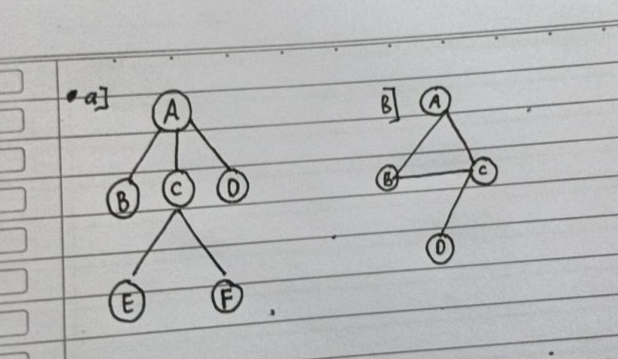
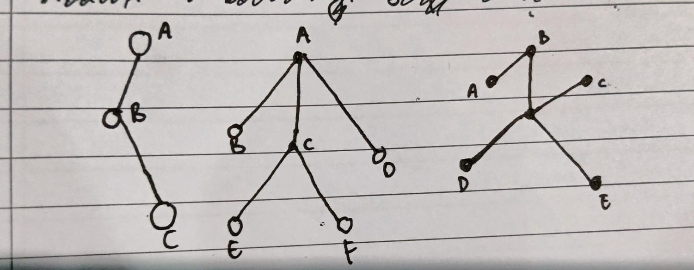
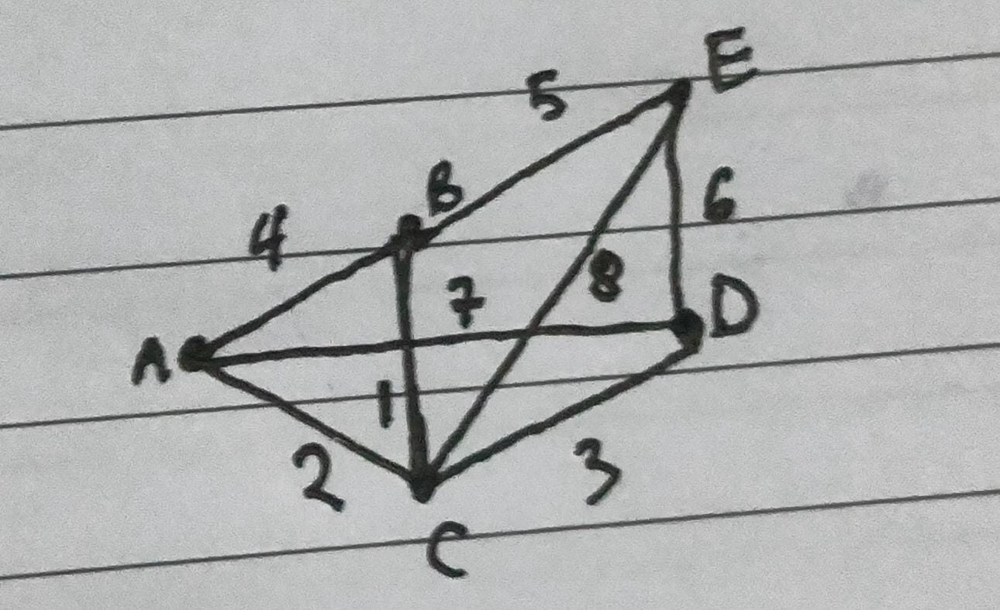
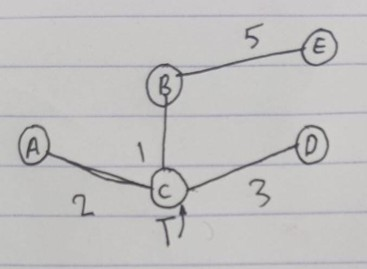
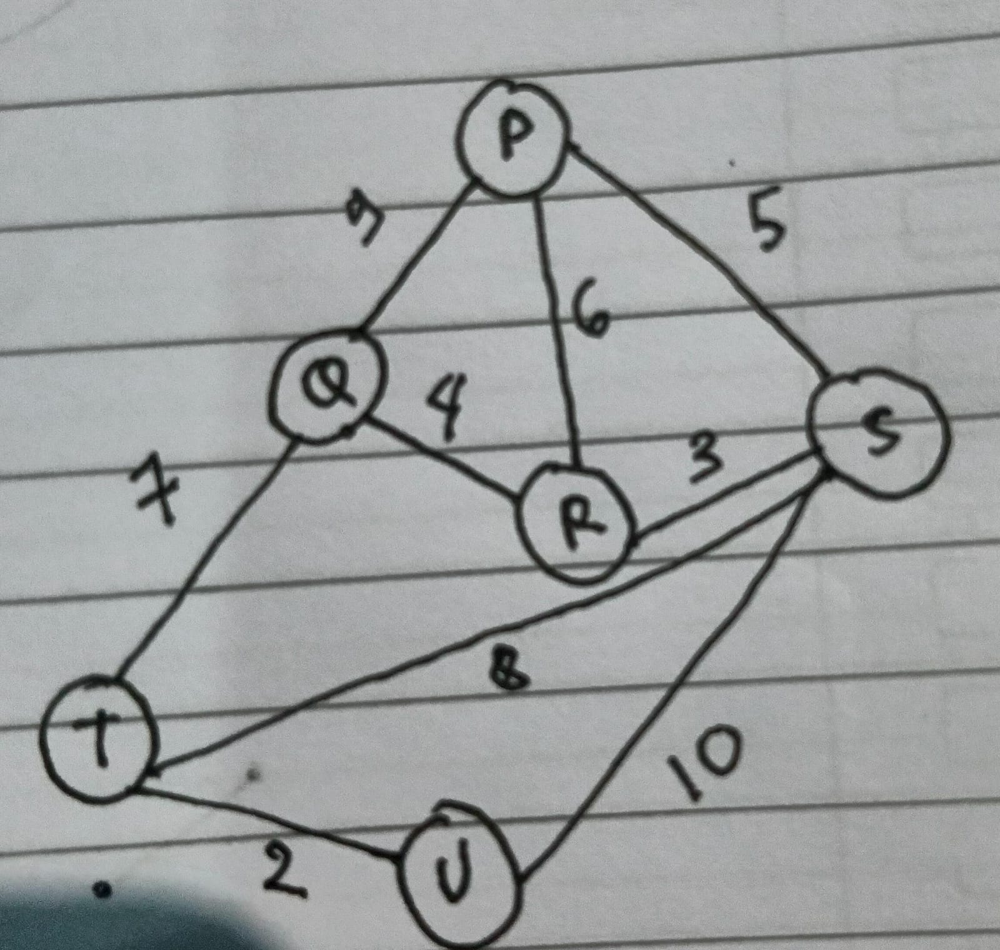
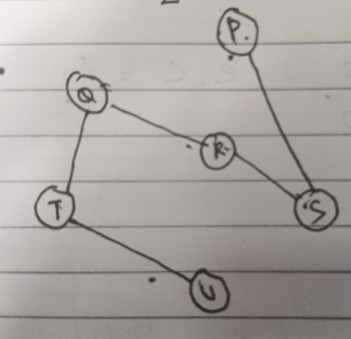
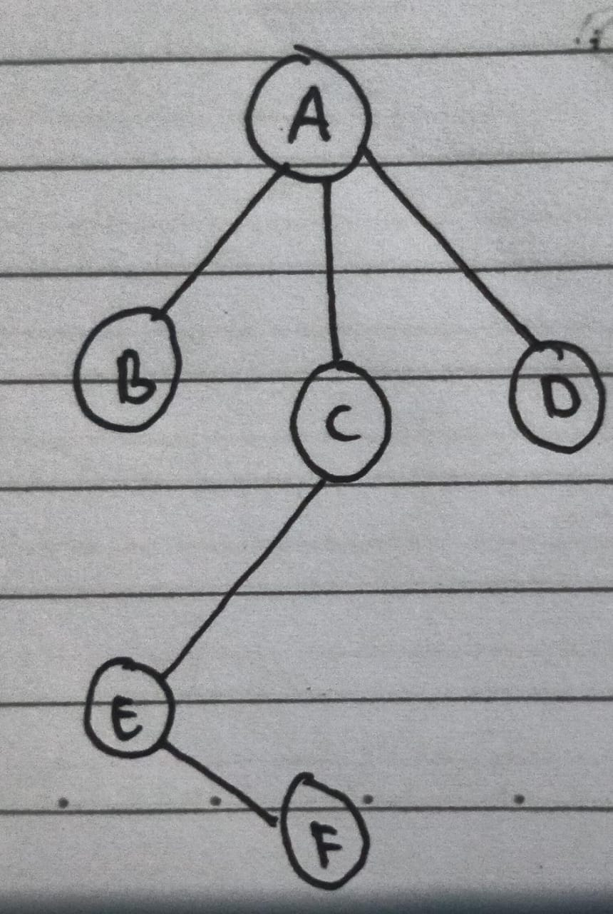

1. Tentukan dari dua graf di bawah ini, graf mana yang termasuk pohon, dan jelaskan alasannya!

Graf A merupakan pohon, karena memiliki sifat pohon
- dia memiliki sisi terhubung
- Tidak memiliki sikuit
- Jumlah sisinya n-1 (jumlah simpul - 1)
Graf B bukan pohon, karena memiliki sirkuit pada sisinya.
2. Jelaskan Mengapa ketiga graf di bawah ini termasuk forest!

Graf tersebut merupakan forest/hutan, karena kumpulan graf tersebut saling lepas dan masing-masing graf
merupakan pohon yang memiliki simpul terhubung tetapi tidak memiliki sirkuit.
3. Tentukan minimum spanning tree dari spanning tree berikut dan total bobot minimumnya dengan menggunakan algoritma prim!


Bobot Sisi :
C-B = 1
A-C = 2
C-D - 3
B-E = 5
Maka total bobotnya adalah :
1 + 2 + 3 + 5 = 11
4. Tentukan minimum spanning tree dari spanning tree berikut dan total bobot minimumnya dengan menggunakan algoritma kruskal!

T - U = 2
R - S = 3
Q - R = 4
P - S = 5
P - R = 6
Q - T = 7
S - T = 8
P - Q = 9
S - U = 10
T - U = 2
R - S = 3
Q - R = 4
P - S = 5
P - R = 6
Q - T = 7
S - T = 8
P - Q = 9
S - U = 10
Pilih
Pilih
Pilih
Pilih
Tidak di Pilih
Pilih
Tidak di Pilih
Tidak di Pilih
Tidak di Pilih
Hasil Minimum Spanning Tree:

Maka total bobotnya adalah :
2 + 3 + 4 + 5 + 7 = 21
5. Jika A adalah akar(root), tentukan:
Parent dari E adalah
Siblings dari C adalah
Child dari D adalah
Level dari simpul F adalah

- Parent dari E adalah C
- Siblings dari C adalah B dan D
- Child dari D tidak ada
- Level dari simpul F adalah 3
Karena cara menghitung level adalah dengan menghitung simpul dari root sampai simpul yang dicari levelnya,
tetapi level dari root adalah 0, jadi level dari simpul F adalah 3.
6. Berikan satu kasus nyata yang dapat di modelkan menggunakan srtuktur tree, lalu jelaskan mengapa model tersebut cocok menggunakan tree dan bukan graf umum !
Contoh kasus nyata adalah seperti struktur organisasi perusahaan.
Alsannya karna :
• Memiliki satu root (direktur)
• Hubungan hierarki (parent -child )
• Tidak ada siklus
• Setiap anggota punya satu atasan langsung
7. Sebuah graf memiliki simpul (vertex) dan merupakan sebuah tree. Berapa jumlah sisinya (edge)? Jelaskan alsannya.
Jika graf memiliki simpul, maka jumlah sisi(edge) sama dengan n-1
yaitu - 1 = sisi.
Karena setiap tree selalu memiliki n-1 sisi(edge).
8. Perhatikan ciri ciri graf berikut !
Memiliki 6 simpul yang tidak memiliki 6 siklus
Salah satu simpul tidak terhubung dengan bagian graf lainnya
Dari ciri ciri di atas apakah graf tersebut merupakan tree? Jelaskan mengapa
Pada ciri-ciri di atas, graf tersebut memiliki 6 simpul dan tidak memiliki sirkuit yang memenuhi syarat tree yang tidak memiliki sirkuit.
Tetapi pada ciri kedua, graf tersebut memiliki simpul yang tidak terhubung dengan bagian simpul lainnya, yang membuat graf tersebut tidak memenuhi syarat tree,
karena semua simpul pada tree harus saling terhubung dan tidak membentuk sirkuit.
Kesimpulannya, graf dari ciri-ciri tersebut bukan merupakan tree.
9. Apakah tujuan dari Minimum Spaning tree dalam graf berbobot ?
Sebutkan dua algoritma yang dapat digunakan untuk mencarinya ?
Tujuan dari minimum spanning tree adalah untuk menghubungkan seluruh simpul dengan total bobot paling minimum
dan tanpa membentuk sirkuit.
Algoritma yang dapat digunakan untuk mencari Minimum spanning tree ada dua, yaitu:
- Algoritma Prim
- Algoritma Kruskal
10. Sebutkan perbedaan dari antara graf terhubung (connected graph) dan tree, mesikupun keduanya sama-sama terhubung.
Graf terhubung memiliki simpul yang saling terhubung dengan simpul lain melewati garis path, dan pada graf terhubung bisa memiliki path yang membentuk sirkuit.
Sedangkan Tree (Pohon) memiliki simpul yang terhubung dan hanya memiliki satu jalur unik yang menghubungkan antar simpul yang tidak membentuk sirkuit.